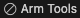

Tips and tricks
This chapter contains useful information to help you solve specific issues.
Create vcpkg configuration file
If your solution does not contain the vcpkg-configuration.json, right-click anywhere in the workspace and select
Configure Arm Tools Environment. The Arm Tools Environment Manager extension then generates this file.
Set current solution in workspace
To activate a solution in the Solution outline view, use the Select Active Solution from workspace option in
Views and More Actions:
 .
.
Documentation does not open
If you are using a Linux machine that uses the Snap package manager, your web browser will not be able to open
documentation that is shipped in CMSIS-Packs as the CMSIS_PACK_ROOT directory is in ${HOME}/.cache/arm/packs which
is not accessible to Snaps. Likewise, the Keil Studio help is located in ${HOME}/.vscode/extensions which is also not
available.
To get this working, use a browser that is not installed as a Snap package:
-
Uninstall the Snap package. For example, run
sudo snap remove firefoxin a Terminal. -
Download the installer from the browser's web site.
-
Install it on your machine.
Memory and Peripheral Inspector are missing
If your Debug view does not contain "PERIPHERALS" and you cannot open the Memory Inspector, check if the extensions are installed correctly. If you had previously uninstalled the Arm Debugger extension, these two extensions might have been removed with it. Just reinstall them via the Extensions view.
Create a library file
With Keil Studio, it is possible to create a library file. All you need to do is to change the output type in the
*.cproject.yml file to lib:
# Control output files (elf is generated by default)
output:
type:
- lib
In the CMSIS view , click . The Terminal output will look like this:
Execute: cbuild /Users/user/project/Arm/ArmCM3/Library/Library.csolution.yml --build --context-set --packs
+----------------------------------------------
(1/1) Cleaning context: "Library.Debug+Library"
+----------------------------------------------
(1/1) Building context: "Library.Debug+Library"
Using AC6 V6.24.0 compiler, from: '/Users/user/.vcpkg/artifacts/2139c4c6/compilers.arm.armclang/6.24.0/bin/'
Building CMake target 'Library.Debug+Library'
[1/2] Building C object CMakeFiles/Group_Source_Files.dir/Users/user/project/Arm/ArmCM3/Library/main.o
[2/2] Linking C static library /Users/user/project/Arm/ArmCM3/Library/out/Library/Library/Debug/Library.lib
+------------------------------------------------------------
Build summary: 1 succeeded, 0 failed - Time Elapsed: 00:00:02
+============================================================
Completed: cbuild succeed with exit code 0
The corresponding library file will be present in the /out-directory.
Note
This only works with CMSIS-Toolbox starting v2.11.0.
Downgrading tool versions
When you downgrade a tool version in the vcpkg-configuration,json file, this will only be taken into account if you
toggle the tools activation.
Do the following:
- Click on the Arm Tools entry in the status bar.
- In the Manage Arm Tools dialog, select Deactivate Environment. The status bar will show that tools are deactivated: 
- Again, click on the Arm Tools entry in the status bar.
- In the Manage Arm Tools dialog, select Reactivate Environment.
The new settings will now the taken into account and you can start working with the downgraded tool version.
STM32CubeMX generator issues
If you are relying on the LL drivers, it may happen that STM32CubeMX does not generate/update a *.cgen.yml file.
To get this fixed, go to:
- Project Manager
- Advanced Settings
- Select HAL (default) for at least one peripheral.
If you rely on LL for your peripherals, select/add an unused peripheral:

Now, the GENERATE CODE button creates/writes the *.cgen.yml file.
Change variable display radix
In the Watch and Live Watch views, you can change the radix of variables by using the
set output-radix base command in the Debug Console. For example,
> set output-radix 16
changes the radix to hexadecimal. Supported choices for base are decimal 8, 10, or 16.
Note
- The
>is part of the entered command instructing the console processing to use GDB CLI. - Refer to Numbers for more information.